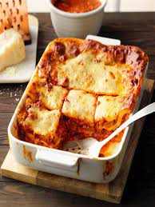

Joshua Weissman's Lasagna Recipe

Description
A savoury homemade lasagna assembled and baked according to Joshua Weissman's instructions.
All ingredients are freshly bought or even made, such as the bechamel sauce or the lasagna
pasta sheets.
Ingredients
- 450g ground beef (chuck)
- 450g ground beef (pork shoulder)
- 2 carrots
- 1 rib of celery
- 2 medium sized onions
- 60g tomato paste
- 250ml white whine
- 350ml chicken stock
- 500ml crushed tomatoes
- pancetta or guanciale
- Lasagna pasta sheets
- Parmigiano reggiano
- Fresh mozzarella
- Fresh basil
- Salt and pepper to taste
Steps
- Make sauce by mixing the ground beef and pork in a bowl.
- Add oil over medium-high heat to large pot.
- Add meat mixture to pot and sear for 2-3 minutes. Remove from pan and set aside.
-
Add guanciale or pancetta and fry. Once done add 1 diced onion, 1 diced celery and 2 diced
carrots.
-
Then add the tomato paste, white wine, the chicken stock, the crushed tomatoes and the meat
mixture.
- Assemble the lasagna.
Joshua Weissman's Lasagna